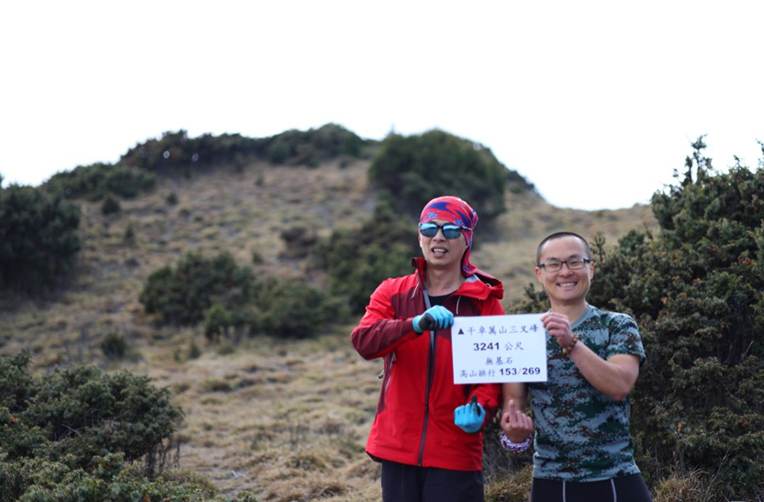
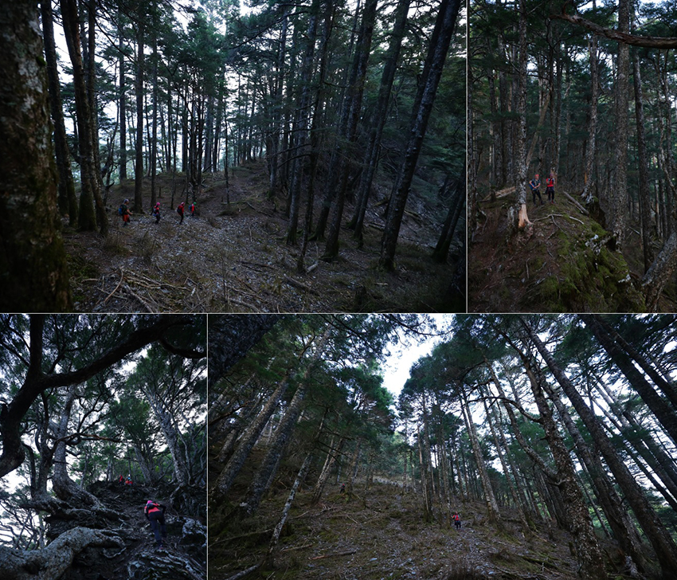
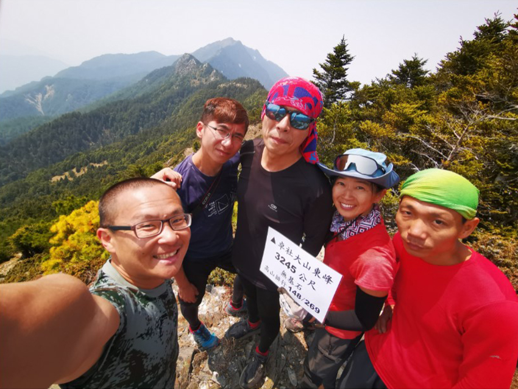
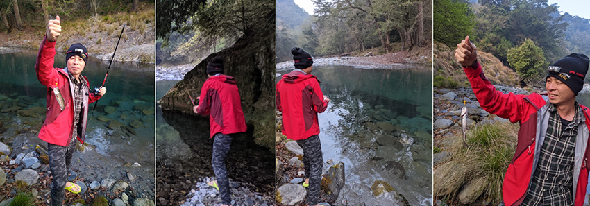

前言
“萬大林道”是傳統百岳干卓萬群峰的登山口，位處於南投縣仁愛鄉，此林道由親愛國小進入，原本林道長度40公里，因路況不佳，目前可行駛高底盤及四輪傳動可駛到約8K大坍方處下車 (有塊紅色禁止通行警告牌及迴車空間)，為此行程起點，而最終要出“丹大林道”於2020年12月才重新開放，此林道位於南投縣信義鄉，於民國46年伐木業者孫海標得林務局巒大山林場管理處所屬[丹大林場]， 為了深入林區伐木運材，他集資並招募數千個民工及退除役官兵，修築此林道，深入中央山脈， 成為全台灣最長的運材卡車道，因此也有人把此林道稱為[孫海林道]。然而這兩條林道要連著走，google地圖，不管是開車，騎腳踏車或者走路都是要繞道而行，附圖說明大概地理位置，由南投縣西北走到東南。(選走路會繞更大圈)
行前準備
因長程縱走A進B出需兩地接駁的關係，所以人數盡量滿車八位，臨時主揪有事少一位，考量乘坐舒適度及隊員能力， 最終七位同行。事前有提醒要輕量化，因為第一天要行進到一般登山隊第二天才會到的營地，所以放棄原本會帶的平底鍋，保冷袋，把生鮮肉品換成乾燥糧食，泡麵，但還是放了二顆蘋果進去，主食準備：四包真空調理包，二包麵條，三包含有調理包的泡麵外加四包維力炸醬麵，以及許多行動量，蔓越莓乾 芒果乾打包完後不含水不到19公斤，感覺有點重把那四包維力炸醬麵拿出來減重一些，心理頭暗自在想，揹的重量不是第一也應該有第二重，但是隊友負重能力，遠遠超出我能想像的…
週四下班就飛奔回家， 揹起100L的包， 搭捷運往台北火車站衝，先到新竹站與小運、甘姐、漩漩集合， 由 小運幫忙開車到霧峰交流道下接另外的隊友小卓、小吳哥以及榮哥， 當看到其他人的包包時，我跪了，又高又大而且包的很紮實，果然隊友實力都深不可測，小運的包快19公斤，榮哥的包超過22公斤，反正全都先上車， 直接先殺到民宿休息睡覺ZZZ…zzz…心裡頭想，會不會有人覺得太重把東西丟出來不揹…
Day-1 總時間 10小時24分 (16。4公里/上升2100公尺)
到民宿晚上10點多，凌晨3:30的接駁車，所以大伙秒睡入眠，而我還在慢慢洗澡，順便減重上完廁所才去睡，之前單攻百岳有被訓練到不睡覺，所以有得睡就很滿足了，搭接駁也可以小補眠一下，跟計劃差不多凌晨5點到8K大坍方處下車，行前有心理建設，認知只要撐過今天，接下幾天就可以輕鬆釣鱒魚到農場HAPPY，因此感覺隊友特別有衝勁眼睛和頭燈都跟著亮了起來，只是太認真發亮，反而沒看不到亮點，那就是每年慕名去加里山參訪的植物，還好榮哥跟甘姐眼睛比頭燈還亮，留下一些[一葉蘭]照片讓我們有眼福，努力踢了四個半小時林道，隊友都不會累中途沒在休息的，來到[9+1粒溪]，這裡是今天唯一活水源，使用濾水器努力喝飽喝足裝入肚裡就不用揹水，但還是不怕重的隊友，硬生生裝了好幾升活水入袋，自知能力有限只把2個500cc水瓶裝滿，休息不到5分鐘大伙又想運動了，繼續後面行程，等等會經過一座百岳干卓萬山3284公尺，中途會有破碎地型，也就是干卓萬斷崖，外加順撿一座269岳干卓萬山三叉峰3241公尺，到三叉營地，但紮營地需再往前到達牧山池，回想起2017年第一次爬干卓萬群峰，第一天也才到乳型峰東鞍營地，紮營後，暫時相信隊友出發前說的…第一天最累。。。
| 一葉蘭 | |
| 綠森林之藍 | |
| 干卓萬山3284公尺 隊友合照 (攝影師-小運) | |
 |
|
| 隊伍過…干卓萬斷崖 | |
| 干卓萬山三叉峰3241公尺…剛好干卓與“小卓” … 只剩隊友小運幫忙拍照，其他隊友[台語：灶那杯] 衝去搶營地了… 此座為269岳，會順路經過…反正天色還早，慢慢玩… |
|
|  | |
| 牧山池…跟小吳哥當鄰居 | |
Day-2 總時間12小時56分(16。7公里/上升1000公尺)
今天是重頭戲，全隊友都沒走過的一座269岳干卓萬東南峰3135公尺，此座少有山友去親近，需要看軌跡朝大方向尋路，加上此座完成後，還要拔營移動到下個地點，所以5點準時出發先往回，爬到三叉路口後，開始往下切， 切到草原後看到杜鵑樹林，今年各地杜鵑花況不錯，拍完照後，大伙又迅速往目標方向移動，沒有明確的路徑，只能看軌跡朝標示點前進，很快不到二小時的時間，已經站在一個寬稜的置高點，對了一下GPX地圖，已在目標上，試圖尋找沒看到山友留下的任何標示，反倒看到了塊大石頭，自己任性把大石頭搬相對高處當標示點，加上小卓有製作登頂牌，拍完照後壓在大石頭下，留給之後上來的山友方便拍照記錄。回程途一開始切到樹林，矮灌木，刺柏裡，修正後發現， 去程走過的路徑比較難，回程隊友腳程及找路很快，從不同方位回到三叉營地，接著跟小運衝上百岳牧山3241公尺，而甘姐及榮哥也接著上來，此百岳在牧山池營地上方不遠處，而小吳哥早早回去拔營了。
昨天抵達營地後有討論，假如時間允許，建議往前推到卡社溪谷，明確指令後，所有人快速收帳整理，不到10點就往卓社大山方向移動，而下個目標介於前往卓社大山叉路的另一座269岳卓社大山東峰3245公尺，小吳哥迫不急待噴出，而漩漩緊跟在後，但其他人還被重裝壓制了上坡速度，快接近叉路時跟上漩漩，而她有些高山不適，因此沒上東峰，輕裝東峰往返後，朝叉路東南方向的另一座269岳 雙子山3049公尺，最後來到雙子山基點峰2997公尺拍團體照，延續到基點峰這路段，之前小吳哥及榮哥單攻過…嚇…。因為雙子山為寛稜而且必經之路，並沒明確的點，因此下午快二點時直接在基點峰拍照留念。
接下來到 [鏡凡池] (原本預計第二天紮營地)，池底黑泥，形成池鏡面反映出周遭倒影，雖然漂亮但隱藏危險，甘姐太興奮直直往泥沼陷，小吳哥及時救援拉離，10多分停留後，又回到未知的路線上，接著需找路下切到溪谷，隊友個個展現專業的一面，輪流帶領著隊伍，途中森林植被是混合了芒草、箭竹、蕨類外加高度落差可能隱藏的凹洞走的有點心驚動魄， 而當下就是探勘找路， 只能朝大方向前進， 散開找路時， 前面隊友走的路並不是適合每個人， 因為有身材限制， 踩踏過後手支撐及腳點都已鬆動， 腦中突然閃過跌落的影像如果隊友一直跟在後面， 過特殊地型必須有能力自行判斷， 自己重裝18公斤用手捉腳抵住地心引力， 搞到腳指頭很痛， 終於切到卡社溪， 這時己過了三個多小時， 脫下鞋子換上夾腳拖渡河到對岸找營地， 紮營後放鬆了才知道餓， 水煮半包麵拌辣子雞丁料理包， 湯再加熱丟一包有肉塊的泡麵， 一次二餐才止住飢餓…。。直到隔天早上， 釣鱒魚完全沒出現在腦海中…
| 往干卓萬東南峰途中的杜鵑林 | |
| 途中不少地型路段， 要經過凹地再往上爬 | |
|  | |
| “干卓萬東南峰3135公尺” 隊友合照 “小運” 掌鏡 | |
| 第二天行進方向 先輕裝去 “干卓萬東南峰” (269岳)>>回程順撿 “牧山” (百岳) 後回到牧山池收帳 重裝重新出發往卓社大山東峰， 雙子山方向前進 |
|
| 牧山3241公尺 Day-1 “小卓”， “漩漩”已先上來…今天輪到 “榮哥”， “甘姐”， 我及藏鏡人 “小運” | |
| 卓社大山東峰合照 “小卓”， “小運”， 我， “甘姐”， “榮哥” | |
|  | |
| 前往雙子山途中及基點峰 | |
| 鏡凡池美景 黑的有點像墨畫， 靠近池邊有泥沼…一但陷入其中， 很難脫身 |
|
 |
|
| 先上切回森林之後就瘋狂處於集中精神找路中 | |
 |
|
| 終於下切到卡社溪谷… 脫掉鞋子換上夾腳拖…。冰鎮一下雙腳…。渡河後找營地紮營… |
|
Day-3 總時間8小時8分(23公里/上升1293公尺)
說好的第一天最硬， 然後第二天硬上加硬， 一早起床先往下游挖洞方便， 看到 “小吳哥” 往上游走去， 原本想說鱒魚可以用撈的或手捉就， 想的太天真了別把鱒魚當塑膠， “小吳哥” 拿出準備已久的神器(甩桿+假餌)， 但實際操作起來也沒那樣容易上鉤， 還好有去大便， 剛好看到有下游有一池比較多魚， 所以建議轉移陣地， 順便隨手要了些土司來當餌料。 甩桿1小時多， 終於開胡上鉤， 因為自己早餐還沒吃， 東西也還沒收， 還是先回營帳填飽自己再說， 最後由 “小運” 主廚煮成一大鍋味增魚湯， 也算是有吃到鱒魚了， 其實時間足夠好好釣魚， 應該會有不錯成績， 看來大家還是想雙腳運動， 整理都很迅速， 出發時間比預計還早。
接著到丹野農場玩耍了一個多小時， 看 “榮哥” 拍抖音搞笑， 原本以為就此快快樂樂的踢林道， 沒想到快11點時迎來第一次的林道下切溪谷， 坡度大到需要腳抵住樹木及用手捉住藤蔓或樹枝來克服地心引力， 當下切至沒有樹木的地方時， 崩塌混合著大岩石， 斷木， 碎石， 沙土， 比較擔心有大石頭滾下來， 然而下切多少， 需要爬回去更高的林道上， 想說應該切這次就飽了， 往後可以安心踢林道時的想法出現沒多久， 接著又碰到碎石崩塌， 試著踩出踏點時， 看到後面又接著一處崩塌， 滑落風險太高因此放棄直接橫切， 必需第二次下切溪谷， 退回林道適合的下切點， 此次碎石佔大部份， 下切溪谷剛好順便補充水份， 但第二次的上攀比較陡， 要上到林道時土石鬆軟踩空， 還好一隻手緊緊捉住樹木才沒滑落， 雖然吃了點土但總算爬上來…。終於可以好好踢林道了， 下午約二點經過七彩湖叉路， 也就是到了 “孫海招待所” 及 “海天寺”， 停留約半小時拍拍古蹟及寺廟後， 腳指頭實在痛的受不了， 換上夾腳拖來踢林道， 這時腳完全釋放開來， 突然有股力量上來， 好像可以慢慢跑， 藉由揹的重裝來使力， 讓下坡更省力…
| 鱒魚: 我終於對全隊有所貢獻了… | |
|  | |
| 前往丹野農場， 剛離開卡社溪河道， 像波波球的芒草… | |
| 歡樂…丹野農場 | |
| 第一次崩塌下切溪谷 | |
| 抵達溪谷前有一段落差， 相對危險 需集中精神 |
|
| 第二次崩塌下切溪谷 | |
| 林道上動物遺骸不少 | |
| “孫海招待所” 古蹟巡禮… | |
| “海天寺”: 雨暘時若(晴雨適時 氣候調和)， 神光普照 | |
| 解放腳指頭後…開始>> 重裝–越野…。賽… | |
| 台電六分所團體照 | |
Day-4總時間4小時42分（23。47公里/下降2306公尺）
昨天不到5點抵達六分所， 看周遭環境選了直升機停機坪旁的空地紮營， 因台電六分所是熱門地方， 想遠離吵雜聲， 也避免我們講話太大聲吵到別隊， 還好沒有直升機起降， 不然帳篷馬上飛走。 昨天抵達一樣也是超級餓， 這團大家都很精實， 下午從沒走到摸黑。 吃完晚餐外面有冷就躲進帳篷聽隊友聊天， 有聊到山上是否有碰到奇奇怪怪的事， 其中有聊到， 碰過有不明形體一直跟著的， 且當時的隊友被引導到錯誤路徑， 後來捉住強制拉回的事情， 而山中小廟或廢棄空房多少會有聚集， 我在想， 如果真的有不明形體跟上我們這一團， 我想也會活活被我們操到爆， 加上每個隊員訓練的跟壞人一樣有精神， 可能更不太敢接近， 爬山很多事都要以虔誠謙卑的心對待， 尊重一切行程所碰到的人， 事， 物或現象， 但平時足夠的訓練相對能把自己的氣場提升到保護自己或別人的狀態， 這也就是相互信任隊友的主要關鍵。`
行程最後一天大約6點半出發返回孫海橋， 原本想說至少有這一天的糜爛行程， 但看起來大家還是喜歡吹吹風， 跑起來…。因為整段都是下坡， 加上揹重裝， 適當的速度來減緩膝蓋的負擔， 憑藉著重力來當推力， 大約九點四十就到台電二分所， 而看牌子真正的名稱 “丹大14林班駐在所” ， 也就是檢查入山證的地方， 提早一天出來， 比較擔心的反而是接駁車， 還好隊友在有訊號的地方就聯絡上。 而隊員都是提早到 “孫海橋” 下的濁水溪玩水， 水一點都還沒濁， 而且超清…雖然便橋已被拆除， 但底盤高一點的車還是過的了溪水， 但颱風過後就不知道了， 但這裡商機龐大路應該都會保持暢通的…
| 台電六分所周遭環境 | |
| “台電三分所”， “二分所” 及 “孫海橋” | |
結語
此次行程把二條原本不太相關的林道串聯起來， “萬大林道” 及 “丹大林道”， 台灣林業發展從日治時期到戰後初期， 產生了許多條林道， 而在林道途中的駐在所或伐木工寮， 伴隨著林業興衰， 保留了那時代的一些東西， 也讓我們這次縱走有探訪古蹟的感覺。 “萬大林道” 因開放的早， 相對登山人員比較熟悉， 但是沿途也是有些危險斷崖， “干卓萬橫斷” 在登山界也是有四大障礙之一， 正常行程第一天重裝都會紮營在 “十粒溪營地”， 跟不同隊山友聊天， 很多隊伍連假提早一天入山， 造成營地大爆滿， 而有強大的隊友讓我們有更多選擇， 以及更充裕的時間， 提早跨到另一個林道， 但不建議其它隊伍這樣做， 主要原因是沿途太多崩塌點及要看軌跡找路， 並非一般傳統百岳行程， 外加 “丹大林道” 之前封閉太久， 在未開放之前很多完百人員最後一座都是六順山， 加上有超長的林道要踢， 因此不太會這樣安排。 此次隊友能力結合了探勘找路+越野腳力以及揹負重量都算是一流的， 因此行程順暢， 甚至提早一天出關， 但秉持第一原則是安全， 不管過危險地型， 找路或其它特殊狀況之下相互支援， 讓此次縱走行程留下美好…
行程記錄
D1-總時間 10小時24分 (16。4公里/上升2100公尺)
04：56 萬大林道行車終點
05：26 鐵皮屋
09：33 十粒溪營地
12：58 干卓萬山（百岳）
14：38 過完倒木斷崖
15：08 干卓萬山三叉峰（269岳）
15：20 牧山池（宿）
PS。 本以為自己18公斤以經很重，還有超過20公斤的隊友，2017年到乳型峰東鞍營地花快8小時，而這次更完全不用擔心會摸黑，隊友一直說第一天最累，接下來完全是騙局。。。
D2-總時間12小時56分(16。7公里/上升1000公尺)
05：01 牧山池輕裝出發
06：40 干卓萬東南峰（07：18離開）
09：09 牧山（百岳）
09：20 牧山池 （09：56重裝出發）
11：46 卓社大山東峰 （269岳）
13：58雙子山基點峰 （269岳）
14：50鏡凡池
17：57下卡社溪谷（宿）
PS。此行程全隊的目標山頭“卓社大山東南峰”，因為有二位隊友已經單過“卓社大山東南峰”&“雙子山”，原本計劃鏡凡池紮營，天氣考量加上，太多膏隊友就決定往前推，只能說被膏推著前進，高山下溪谷都是很有地型挑戰，不建議不會找路或攀爬手力不足的山友，雙子山之後行程迷途及跌落斷崖危險性超高。。。
D3-總時間8小時8分(23公里/上升1293公尺)
08：37 卡社溪谷出發
09：35 丹野農場
09：59 郵局車
10：07 大水池
10：58 第一次林道崩塌硬切溪谷（危險）
12：45 第二次林道崩塌硬切溪谷（危險）
14：04 七彩湖叉路
14：05 孫海招待所/海天寺
16：45 台電六分所（宿）
PS。 原本以為後面都是專心踢馬路，所以有留釣鱒魚的時間，還好有開胡，但已壓縮一天，所以要回營地收帳，交由隊上主廚煮鱒魚豆腐湯，真的好喝^^ ，吃完早餐踢往丹野農場，但已成廢墟，但看規模 以前還不小，本以為就此無聊的踢林道，硬生生的林道崩塌，往回找下切點，在下切的過程坡度超過一般可制動的靜摩擦力，而且還重裝，心裡一直禱告別出什麼事，全員在溪底補充水及行動糧食，準備上切到林道，這樣玩了兩輪，重點是土石鬆軟，上林道後隊友開始火力啟動，而自己腳趾下切上切擠到很難受，所以海天寺後換夾腳拖。。。開啟“重裝越野模式”。。。隊友大都是越野選手，果然。。。
D4-總時間：4小時42分（23。47公里/下降2306公尺）
06：23 台電六分所出發
08：47 台電三分所
09：40 丹大14林班駐在所
10：30 休息後出發
11：15 孫海橋
PS。 原本以為至少有一天糜爛行，大家還是喜歡跑起來，因為要減少下坡膝蓋負擔，用重力來當推力，自己在怎努力跑，只要停下來，5～10分隊友一定跟上，行程只有超前，沒有落後。。。